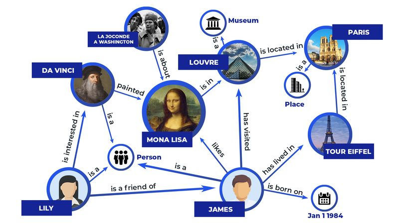
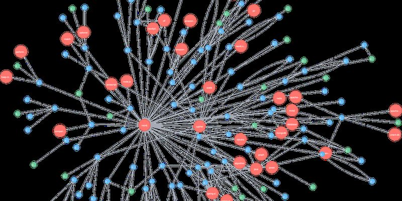
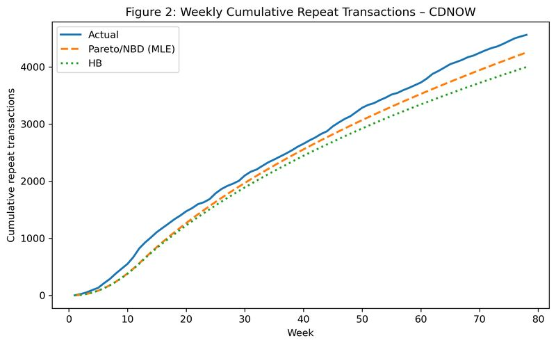
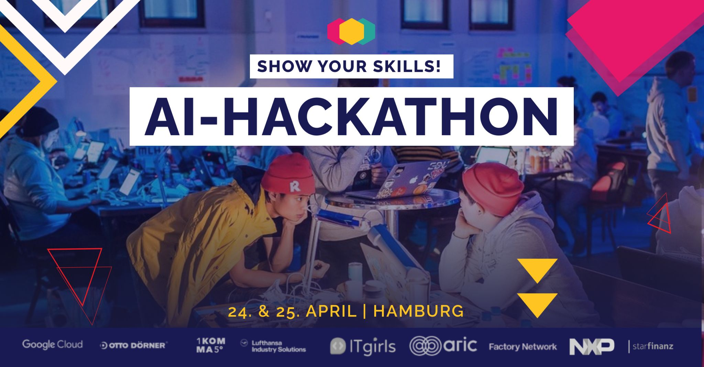

Data Scientist and AI Engineer with ten years of analytical experience across finance, telecom, and gaming. I build production forecasting systems at InnoGames using Prophet, PyMC, and TimesFM, while completing my M.Sc. at Leuphana University on a Deutschlandstipendium. My thesis develops an open-source agentic forecasting architecture combining TimesFM, PyMC, and dual-process LLM reasoning over an episodic memory of past prediction cycles, deployable entirely on EU infrastructure.
My M.Sc. thesis explores how two complementary agents (a fast forecaster and a slower auditor) coordinate over an episodic memory of past prediction cycles to improve probabilistic three-month revenue forecasts at InnoGames.
Work in progress through September 2026. Further details once the thesis is submitted.
Ten years in analytics, from telecom M&A research to production forecasting.
That path shaped my technical taste. I favor methods that are interpretable, auditable, and defensible to non-technical stakeholders: Bayesian inference, structured memory, instrumented forecasts. I build systems that hold up when the data is messier than the textbook suggested.
Currently completing my M.Sc. in Management & Data Science at Leuphana University as a Deutschlandstipendium scholar (GPA 1.8), while working at InnoGames on production ML forecasting. Open to full-time roles in Germany from December 2026.

Team project: SPARQL-based question answering over structured knowledge graphs, enabling natural language queries over RDF knowledge bases.
Team project with a regional transit partner: applied ML to model and predict transportation routes, combining geospatial data with predictive modelling.

Graph database solution using Neo4j and Cypher to analyse artists' influence and cluster musical lineages.

Implemented and validated the hierarchical Bayesian Pareto/NBD model from Abe (2009) on the canonical CDNOW dataset.

Built in 24 hours: a computer vision pipeline for identifying broken or damaged objects from product imagery.
I bring the most value in forecasting automation, scalable analytics pipelines, and agentic system design, with a focus on open-source, EU-deployable architectures.